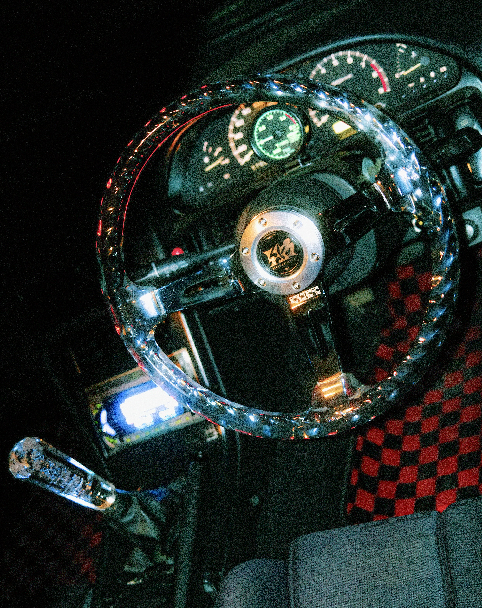

Hitman.
2022-present.
The Hitman is an elusive aftermarket steering wheel in drift culture, known for its distinctive translucent look. Originally popularized by now defunct Japanese brand Hitman, it features a clear or tinted crystal-acrylic outer rim with twisted metal frame attached to aggressive chrome spokes. Originals are incredibly hard to find, with examples fetching over $1000aud on the used market.
In 2022, I began a collaboration with a racing part manufacturer WXAP to redesign and reproduce this wheel. I finish these locally with coloured glitter clear coats to style them uniquely. As of now, just under 300 have been made and sold in 350mm and 330mm diameters.
More on this project: https://www.joysupplyjapan.com/product-page/uzumaki-330mm https://www.joysupplyjapan.com/product-page/uzumaki-clear https://www.instagram.com/p/CYjC92sPD_T/?img_index=1 https://www.instagram.com/p/CfgdkSdpfGJ/?img_index=1 https://www.instagram.com/p/Cfq7v6MJ6Zn/?img_index=1 https://www.instagram.com/p/CnBdDuxymGw/?img_index=1 https://www.instagram.com/p/DBf870BSnJU/?img_index=1

Hoso~Boyo Uzumaki. Chrome steel, clear acrylic.